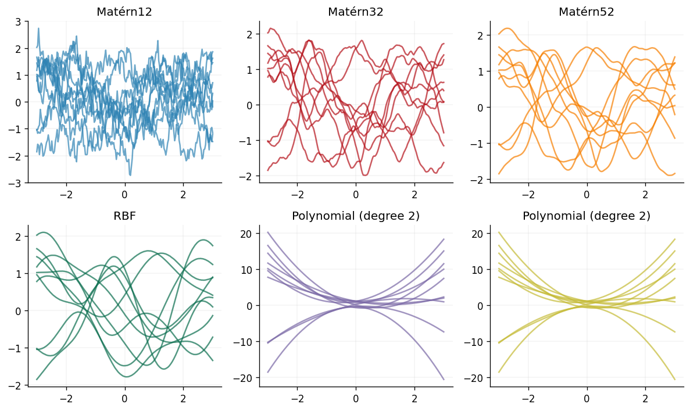
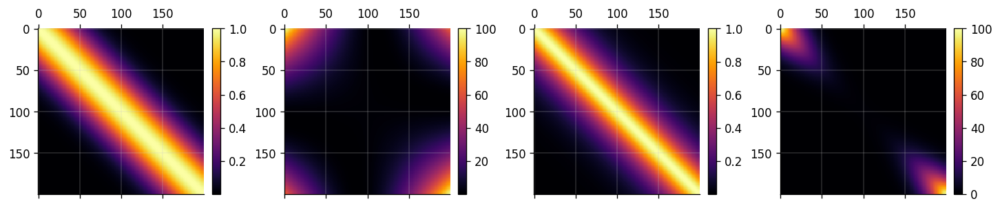
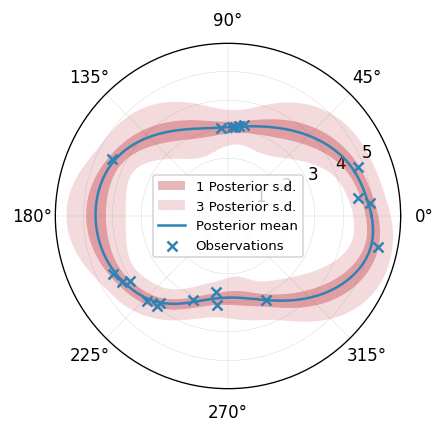

Kernel Guide
In this guide, we introduce the kernels available in GPJax and demonstrate how to create custom kernels.
# Enable Float64 for more stable matrix inversions.
from jax import config
from jax.nn import softplus
import jax.numpy as jnp
import jax.random as jr
from jaxtyping import (
Array,
Float,
install_import_hook,
)
import matplotlib.pyplot as plt
from numpyro.distributions import constraints
import numpyro.distributions.transforms as npt
from examples.utils import use_mpl_style
from gpjax.kernels.computations import DenseKernelComputation
from gpjax.parameters import (
DEFAULT_BIJECTION,
PositiveReal,
)
config.update("jax_enable_x64", True)
with install_import_hook("gpjax", "beartype.beartype"):
import gpjax as gpx
from gpjax.parameters import Parameter
# set the default style for plotting
use_mpl_style()
key = jr.key(42)
cols = plt.rcParams["axes.prop_cycle"].by_key()["color"]
Supported Kernels
The following kernels are natively supported in GPJax.
- Matérn 1/2, 3/2 and 5/2.
- RBF (or squared exponential).
- Rational quadratic.
- Powered exponential.
- Polynomial.
- White noise
- Linear.
- Polynomial.
- Graph kernels.
While the syntax is consistent, each kernel's type influences the characteristics of the sample paths drawn. We visualise this below with 10 function draws per kernel.
kernels = [
gpx.kernels.Matern12(),
gpx.kernels.Matern32(),
gpx.kernels.Matern52(),
gpx.kernels.RBF(),
gpx.kernels.Polynomial(),
gpx.kernels.Polynomial(degree=2),
]
fig, axes = plt.subplots(ncols=3, nrows=2, figsize=(10, 6), tight_layout=True)
x = jnp.linspace(-3.0, 3.0, num=200).reshape(-1, 1)
meanf = gpx.mean_functions.Zero()
for k, ax, c in zip(kernels, axes.ravel(), cols, strict=False):
prior = gpx.gps.Prior(mean_function=meanf, kernel=k)
rv = prior(x)
y = rv.sample(key=jr.key(22), sample_shape=(10,))
ax.plot(x, y.T, alpha=0.7, color=c)
ax.set_title(k.name)

Active dimensions
By default, kernels operate over every dimension of the supplied inputs. In
some use cases, it is desirable to restrict kernels to specific dimensions of
the input data. We can achieve this by the active dims argument, which
determines which input index values the kernel evaluates.
To see this, consider the following 5-dimensional dataset for which we would like our RBF kernel to act on the first, second and fourth dimensions.
The resulting kernel has one length-scale parameter per input dimension --- an ARD kernel.
Lengthscales: [38;2;79;201;177mPositiveReal[0m[38;2;255;213;3m([0m[38;2;105;105;105m # 3 (24 B)[0m
[38;2;156;220;254mvalue[0m[38;2;212;212;212m=[0mArray([1., 1., 1.], dtype=float64),
[38;2;156;220;254mtag[0m[38;2;212;212;212m=[0m[38;2;207;144;120m'positive'[0m
[38;2;255;213;3m)[0m
We'll now simulate some data and evaluate the kernel on the previously selected input dimensions.
# Inputs
x_matrix = jr.normal(key, shape=(50, 5))
# Compute the Gram matrix
K = slice_kernel.gram(x_matrix)
print(K.shape)
(50, 50)
Kernel combinations
The product or sum of two positive definite matrices yields a positive
definite matrix. Consequently, summing or multiplying sets of kernels is a
valid operation that can give rich kernel functions. In GPJax, functionality for
a sum kernel is provided by the SumKernel class.
k1 = gpx.kernels.RBF()
k2 = gpx.kernels.Polynomial()
sum_k = gpx.kernels.SumKernel(kernels=[k1, k2])
fig, ax = plt.subplots(ncols=3, figsize=(9, 3))
im0 = ax[0].matshow(k1.gram(x).to_dense())
im1 = ax[1].matshow(k2.gram(x).to_dense())
im2 = ax[2].matshow(sum_k.gram(x).to_dense())
fig.colorbar(im0, ax=ax[0], fraction=0.05)
fig.colorbar(im1, ax=ax[1], fraction=0.05)
fig.colorbar(im2, ax=ax[2], fraction=0.05)
<matplotlib.colorbar.Colorbar at 0x7f9fb1992090>
Similarly, products of kernels can be created through the ProductKernel class.
k3 = gpx.kernels.Matern32()
prod_k = gpx.kernels.ProductKernel(kernels=[k1, k2, k3])
fig, ax = plt.subplots(ncols=4, figsize=(12, 3))
im0 = ax[0].matshow(k1.gram(x).to_dense())
im1 = ax[1].matshow(k2.gram(x).to_dense())
im2 = ax[2].matshow(k3.gram(x).to_dense())
im3 = ax[3].matshow(prod_k.gram(x).to_dense())
fig.colorbar(im0, ax=ax[0], fraction=0.05)
fig.colorbar(im1, ax=ax[1], fraction=0.05)
fig.colorbar(im2, ax=ax[2], fraction=0.05)
fig.colorbar(im3, ax=ax[3], fraction=0.05)
<matplotlib.colorbar.Colorbar at 0x7f9fb00d51d0>

Custom kernel
GPJax makes the process of implementing kernels of your choice straightforward with two key steps:
- Listing the kernel's parameters.
- Defining the kernel's pairwise operation.
We'll demonstrate this process now for a circular kernel --- an adaption of the excellent guide given in the PYMC3 documentation. We encourage curious readers to visit their notebook here.
Circular kernel
When the underlying space is polar, typical Euclidean kernels such as Matérn kernels are insufficient at the boundary where discontinuities will present themselves. This is due to the fact that for a polar space \(\lvert 0, 2\pi\rvert=0\) i.e., the space wraps. Euclidean kernels have no mechanism in them to represent this logic and will instead treat \(0\) and \(2\pi\) and elements far apart. Circular kernels do not exhibit this behaviour and instead wrap around the boundary points to create a smooth function. Such a kernel was given in Padonou & Roustant (2015) where any two angles \(\theta\) and \(\theta'\) are written as
Here the hyperparameter \(\tau\) is analogous to a lengthscale for Euclidean stationary kernels, controlling the correlation between pairs of observations. While \(d\) is an angular distance metric
To implement this, one must write the following class.
def angular_distance(x, y, c):
return jnp.abs((x - y + c) % (c * 2) - c)
class ShiftedSoftplusTransform(npt.ParameterFreeTransform):
r"""
Transform from unconstrained space to the domain [4, infinity) via
:math:`y = 4 + \log(1 + \exp(x))`. The inverse is computed as
:math:`x = \log(\exp(y - 4) - 1)`.
"""
domain = constraints.real
codomain = constraints.interval(4.0, jnp.inf) # updated codomain
def __call__(self, x):
return 4.0 + softplus(x) # shift the softplus output by 4
def _inverse(self, y):
return npt._softplus_inv(y - 4.0) # subtract the shift in the inverse
def log_abs_det_jacobian(self, x, y, intermediates=None):
return -softplus(-x)
DEFAULT_BIJECTION["polar"] = ShiftedSoftplusTransform()
class Polar(gpx.kernels.AbstractKernel):
period: float
tau: PositiveReal
def __init__(
self,
tau: float = 5.0,
period: float = 2 * jnp.pi,
active_dims: list[int] | slice | None = None,
n_dims: int | None = None,
):
super().__init__(active_dims, n_dims, DenseKernelComputation())
self.period = jnp.array(period)
self.tau = PositiveReal(jnp.array(tau), tag="polar")
def __call__(
self, x: Float[Array, "1 D"], y: Float[Array, "1 D"]
) -> Float[Array, "1"]:
c = self.period / 2.0
t = angular_distance(x, y, c)
K = (1 + self.tau.value * t / c) * jnp.clip(
1 - t / c, 0, jnp.inf
) ** self.tau.value
return K.squeeze()
We unpack this now to make better sense of it. In the kernel's initialiser
we specify the length of a single period. As the underlying
domain is a circle, this is \(2\pi\). We then define the kernel's __call__
function which is a direct implementation of Equation (1) where we define c
as half the value of period.
To constrain \(\tau\) to be greater than 4, we use a Softplus bijector with a
clipped lower bound of 4.0. This is done by specifying the bijector argument
when we define the parameter field.
Using our polar kernel
We proceed to fit a GP with our custom circular kernel to a random sequence of points on a circle (see the Regression notebook for further details on this process).
# Simulate data
angles = jnp.linspace(0, 2 * jnp.pi, num=200).reshape(-1, 1)
n = 20
noise = 0.2
X = jnp.sort(jr.uniform(key, minval=0.0, maxval=jnp.pi * 2, shape=(n, 1)), axis=0)
y = 4 + jnp.cos(2 * X) + jr.normal(key, shape=X.shape) * noise
D = gpx.Dataset(X=X, y=y)
# Define polar Gaussian process
PKern = Polar()
meanf = gpx.mean_functions.Zero()
likelihood = gpx.likelihoods.Gaussian(num_datapoints=n)
circular_posterior = gpx.gps.Prior(mean_function=meanf, kernel=PKern) * likelihood
# Optimise GP's marginal log-likelihood using BFGS
opt_posterior, history = gpx.fit_scipy(
model=circular_posterior,
objective=lambda p, d: -gpx.objectives.conjugate_mll(p, d),
train_data=D,
trainable=Parameter,
)
Optimization terminated successfully.
Current function value: 31.146389
Iterations: 18
Function evaluations: 23
Gradient evaluations: 23
Prediction
We'll now query the GP's predictive posterior at linearly spaced novel inputs and illustrate the results.
posterior_rv = opt_posterior.likelihood(opt_posterior.predict(angles, train_data=D))
mu = posterior_rv.mean
one_sigma = jnp.sqrt(posterior_rv.variance)
fig = plt.figure(figsize=(7, 3.5))
gridspec = fig.add_gridspec(1, 1)
ax = plt.subplot(gridspec[0], polar=True)
ax.fill_between(
angles.squeeze(),
mu - one_sigma,
mu + one_sigma,
alpha=0.3,
label=r"1 Posterior s.d.",
color=cols[1],
lw=0,
)
ax.fill_between(
angles.squeeze(),
mu - 3 * one_sigma,
mu + 3 * one_sigma,
alpha=0.15,
label=r"3 Posterior s.d.",
color=cols[1],
lw=0,
)
ax.plot(angles, mu, label="Posterior mean")
ax.scatter(D.X, D.y, alpha=1, label="Observations")
ax.legend()
<matplotlib.legend.Legend at 0x7f9fabc69f10>

System configuration
Author: Thomas Pinder
Last updated: Sat Oct 11 2025
Python implementation: CPython
Python version : 3.11.13
IPython version : 9.5.0
matplotlib: 3.10.6
jax : 0.7.1
gpjax : 0.13.0
jaxtyping : 0.3.2
numpyro : 0.19.0
Watermark: 2.5.0